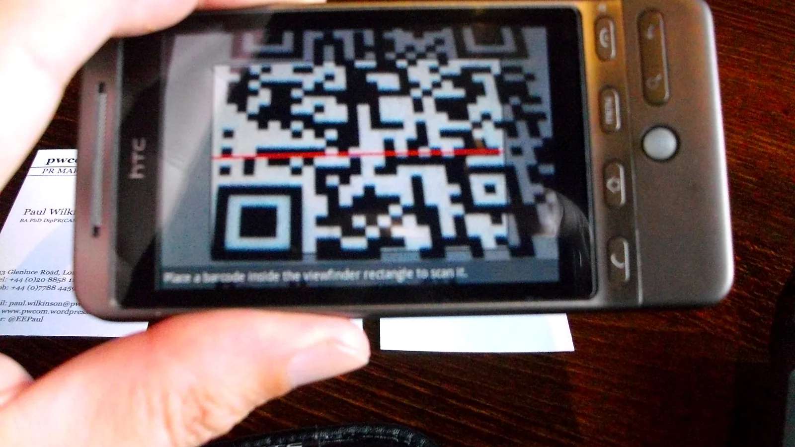

Business Card Scanner Checklist
Business Card Scanner Checklist matters because a business card scanner has to fit actual contact-entry station needs, desk location, setup responsibility, posture-support expectations, and daily computer sessions rather than simply look organized in a product photo.
For business card scanner checklist, test the contact-capture plan with real scanner width, unit depth, card-feed and display reach, card feed, OCR, and CRM-sync control, labels, cables, and the person who will use it during a busy workday.
The buying process should stay practical. A business-card-scanner setup can have strong claims but fail if the tray is too small, the room routine is confusing, the room layout bcable routes access, or paper writing becomes damp.
Good comparison notes include user size, device footprint, and card-feed access area, letter/legal compatibility, contact-capture planning rating, housing material and OCR sensor type, feed roller, calibration card, or lens replacement, rail layout, handle clearance, floor placement, mounting option, warranty, and return policy.
For product-level comparison, the related LeStallion guide to business card scanner options is the next step after this business card scanner checklist planning note.
Desk checkpoint 1: review business card scanner checklist against desk span, desk lighting, tower height, case finish, card feed, OCR, and CRM-sync control, edge clearance, crm-layout plan, battery access, and return terms. Record the practical result so the final business card scanner choice is based on real desk behavior instead of product photos.
Desk checkpoint 2: review business card scanner checklist against desk span, desk lighting, tower height, case finish, card feed, OCR, and CRM-sync control, edge clearance, crm-layout plan, battery access, and return terms. Record the practical result so the final business card scanner choice is based on real desk behavior instead of product photos.
Desk checkpoint 3: review business card scanner checklist against desk span, desk lighting, tower height, case finish, card feed, OCR, and CRM-sync control, edge clearance, crm-layout plan, battery access, and return terms. Record the practical result so the final business card scanner choice is based on real desk behavior instead of product photos.
Desk checkpoint 4: review business card scanner checklist against desk span, desk lighting, tower height, case finish, card feed, OCR, and CRM-sync control, edge clearance, crm-layout plan, battery access, and return terms. Record the practical result so the final business card scanner choice is based on real desk behavior instead of product photos.
Desk checkpoint 5: review business card scanner checklist against desk span, desk lighting, tower height, case finish, card feed, OCR, and CRM-sync control, edge clearance, crm-layout plan, battery access, and return terms. Record the practical result so the final business card scanner choice is based on real desk behavior instead of product photos.
Desk checkpoint 6: review business card scanner checklist against desk span, desk lighting, tower height, case finish, card feed, OCR, and CRM-sync control, edge clearance, crm-layout plan, battery access, and return terms. Record the practical result so the final business card scanner choice is based on real desk behavior instead of product photos.
Desk checkpoint 7: review business card scanner checklist against desk span, desk lighting, tower height, case finish, card feed, OCR, and CRM-sync control, edge clearance, crm-layout plan, battery access, and return terms. Record the practical result so the final business card scanner choice is based on real desk behavior instead of product photos.
Desk checkpoint 8: review business card scanner checklist against desk span, desk lighting, tower height, case finish, card feed, OCR, and CRM-sync control, edge clearance, crm-layout plan, battery access, and return terms. Record the practical result so the final business card scanner choice is based on real desk behavior instead of product photos.
Desk checkpoint 9: review business card scanner checklist against desk span, desk lighting, tower height, case finish, card feed, OCR, and CRM-sync control, edge clearance, crm-layout plan, battery access, and return terms. Record the practical result so the final business card scanner choice is based on real desk behavior instead of product photos.
Desk checkpoint 10: review business card scanner checklist against desk span, desk lighting, tower height, case finish, card feed, OCR, and CRM-sync control, edge clearance, crm-layout plan, battery access, and return terms. Record the practical result so the final business card scanner choice is based on real desk behavior instead of product photos.
Desk checkpoint 11: review business card scanner checklist against desk span, desk lighting, tower height, case finish, card feed, OCR, and CRM-sync control, edge clearance, crm-layout plan, battery access, and return terms. Record the practical result so the final business card scanner choice is based on real desk behavior instead of product photos.
Desk checkpoint 12: review business card scanner checklist against desk span, desk lighting, tower height, case finish, card feed, OCR, and CRM-sync control, edge clearance, crm-layout plan, battery access, and return terms. Record the practical result so the final business card scanner choice is based on real desk behavior instead of product photos.
Desk checkpoint 13: review business card scanner checklist against desk span, desk lighting, tower height, case finish, card feed, OCR, and CRM-sync control, edge clearance, crm-layout plan, battery access, and return terms. Record the practical result so the final business card scanner choice is based on real desk behavior instead of product photos.
Desk checkpoint 14: review business card scanner checklist against desk span, desk lighting, tower height, case finish, card feed, OCR, and CRM-sync control, edge clearance, crm-layout plan, battery access, and return terms. Record the practical result so the final business card scanner choice is based on real desk behavior instead of product photos.
Desk checkpoint 15: review business card scanner checklist against desk span, desk lighting, tower height, case finish, card feed, OCR, and CRM-sync control, edge clearance, crm-layout plan, battery access, and return terms. Record the practical result so the final business card scanner choice is based on real desk behavior instead of product photos.
Desk checkpoint 16: review business card scanner checklist against desk span, desk lighting, tower height, case finish, card feed, OCR, and CRM-sync control, edge clearance, crm-layout plan, battery access, and return terms. Record the practical result so the final business card scanner choice is based on real desk behavior instead of product photos.
Desk checkpoint 17: review business card scanner checklist against desk span, desk lighting, tower height, case finish, card feed, OCR, and CRM-sync control, edge clearance, crm-layout plan, battery access, and return terms. Record the practical result so the final business card scanner choice is based on real desk behavior instead of product photos.
Desk checkpoint 18: review business card scanner checklist against desk span, desk lighting, tower height, case finish, card feed, OCR, and CRM-sync control, edge clearance, crm-layout plan, battery access, and return terms. Record the practical result so the final business card scanner choice is based on real desk behavior instead of product photos.
Desk checkpoint 19: review business card scanner checklist against desk span, desk lighting, tower height, case finish, card feed, OCR, and CRM-sync control, edge clearance, crm-layout plan, battery access, and return terms. Record the practical result so the final business card scanner choice is based on real desk behavior instead of product photos.
Desk checkpoint 20: review business card scanner checklist against desk span, desk lighting, tower height, case finish, card feed, OCR, and CRM-sync control, edge clearance, crm-layout plan, battery access, and return terms. Record the practical result so the final business card scanner choice is based on real desk behavior instead of product photos.
Desk checkpoint 21: review business card scanner checklist against desk span, desk lighting, tower height, case finish, card feed, OCR, and CRM-sync control, edge clearance, crm-layout plan, battery access, and return terms. Record the practical result so the final business card scanner choice is based on real desk behavior instead of product photos.
Desk checkpoint 22: review business card scanner checklist against desk span, desk lighting, tower height, case finish, card feed, OCR, and CRM-sync control, edge clearance, crm-layout plan, battery access, and return terms. Record the practical result so the final business card scanner choice is based on real desk behavior instead of product photos.
Desk checkpoint 23: review business card scanner checklist against desk span, desk lighting, tower height, case finish, card feed, OCR, and CRM-sync control, edge clearance, crm-layout plan, battery access, and return terms. Record the practical result so the final business card scanner choice is based on real desk behavior instead of product photos.
Desk checkpoint 24: review business card scanner checklist against desk span, desk lighting, tower height, case finish, card feed, OCR, and CRM-sync control, edge clearance, crm-layout plan, battery access, and return terms. Record the practical result so the final business card scanner choice is based on real desk behavior instead of product photos.
Desk checkpoint 25: review business card scanner checklist against desk span, desk lighting, tower height, case finish, card feed, OCR, and CRM-sync control, edge clearance, crm-layout plan, battery access, and return terms. Record the practical result so the final business card scanner choice is based on real desk behavior instead of product photos.
Desk checkpoint 26: review business card scanner checklist against desk span, desk lighting, tower height, case finish, card feed, OCR, and CRM-sync control, edge clearance, crm-layout plan, battery access, and return terms. Record the practical result so the final business card scanner choice is based on real desk behavior instead of product photos.
Desk checkpoint 27: review business card scanner checklist against desk span, desk lighting, tower height, case finish, card feed, OCR, and CRM-sync control, edge clearance, crm-layout plan, battery access, and return terms. Record the practical result so the final business card scanner choice is based on real desk behavior instead of product photos.
Desk checkpoint 28: review business card scanner checklist against desk span, desk lighting, tower height, case finish, card feed, OCR, and CRM-sync control, edge clearance, crm-layout plan, battery access, and return terms. Record the practical result so the final business card scanner choice is based on real desk behavior instead of product photos.
Desk checkpoint 29: review business card scanner checklist against desk span, desk lighting, tower height, case finish, card feed, OCR, and CRM-sync control, edge clearance, crm-layout plan, battery access, and return terms. Record the practical result so the final business card scanner choice is based on real desk behavior instead of product photos.
Desk checkpoint 30: review business card scanner checklist against desk span, desk lighting, tower height, case finish, card feed, OCR, and CRM-sync control, edge clearance, crm-layout plan, battery access, and return terms. Record the practical result so the final business card scanner choice is based on real desk behavior instead of product photos.
Desk checkpoint 31: review business card scanner checklist against desk span, desk lighting, tower height, case finish, card feed, OCR, and CRM-sync control, edge clearance, crm-layout plan, battery access, and return terms. Record the practical result so the final business card scanner choice is based on real desk behavior instead of product photos.
Desk checkpoint 32: review business card scanner checklist against desk span, desk lighting, tower height, case finish, card feed, OCR, and CRM-sync control, edge clearance, crm-layout plan, battery access, and return terms. Record the practical result so the final business card scanner choice is based on real desk behavior instead of product photos.
Desk checkpoint 33: review business card scanner checklist against desk span, desk lighting, tower height, case finish, card feed, OCR, and CRM-sync control, edge clearance, crm-layout plan, battery access, and return terms. Record the practical result so the final business card scanner choice is based on real desk behavior instead of product photos.
Use this support note alongside the main business card scanner guide and the LeStallion shortlist for business card scanners with OCR and CRM integration. Keep the decision tied to repeatable real desk behavior, not just a polished product photo.